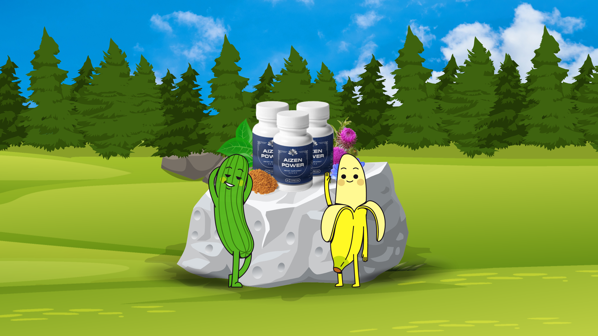

What is Aizen Power?
Aizen Power is a natural dietary supplement that helps enhance male sexual health. It is designed to help overcome problems like erectile dysfunction. The formula has been created after numerous years of thorough testing and research. As it is a natural supplement, it is packed with the nutrients and herbs that your body needs. Being natural it does not consist of harmful ingredients and is side effect free.

Aizen Power helps improve your sexual life safely and easily. It provides benefits without causing damage to the reproductive system, unlike other male enhancement supplements. How does it work? The main function of Aizen Power is the improvement of erectile function among men. The supplement, therefore, targets the root causes of erectile dysfunction and eliminates it. The supplement is a combination of important herbs and ingredients, which makes it much more powerful than other male enhancement supplements. Which ingredients have been added to Aizen Power? Aizen Power is a combination of the most potent natural ingredients acquired from the best sources. When these herbs and components are combined, they have a powerful impact on a man’s sexual health. Take a look at the following ingredients: Zinc: Zinc is an essential mineral, and it improves sexual health. It plays a role in the treatment of ED and has therefore been added to the supplement. It helps absorb various vitamins and minerals from your diet and supplements. Zinc deficiency is often linked with ED and premature ejaculations. So you must consider taking it regularly. Chromium: Chromium is an essential trace mineral that improves insulin sensitivity and enhances protein, carbohydrate, and lipid metabolism. A small quantity of this mineral is essential for all individuals. Chromium may also help in losing weight. It may play a role in reducing depression and may help with mood regulation. Its deficiency can lead to fatigue, weak bones, poor memory add may affect eye health. It may help enhance performance and increase energy and is therefore used by athletes. Alpha Lipoic Acid: Alpha lipoic acid possesses properties that promote the improvement of testosterone production. It gives the male reproductive hormone production a boost and ensures their smooth functioning. It helps enhance blood circulation and therefore helps achieve faster elections. It also nourishes your penile chambers. Green Tea Leaf: It is a natural blood flow-enhancing nutrient. It is rich in polyphenols and therefore helps reduce inflammation. It is typically used as a weight loss remedy. Green tea helps relieve stress and helps boost stamina. This leads to an improvement in sexual performance. It helps your body release happy hormones which enhances your sex drive while boosting libido. Berberine HCl: It is a bitter-tasting and yellow-colored chemical. It provides several health benefits at once. It belongs to a class of compounds called alkaloids. It has been used in traditional Chinese medicine to treat various ailments. It may help in keeping blood sugar levels in check. It inhibits the growth of fat cells at the molecular level and therefore aids weight loss. It may help lower cholesterol levels and may reduce the risk of heart disease. It may fight depression and may help treat cancer. It has antioxidant and anti-inflammatory properties. Resveratrol: Resveratrol is known for its capability to reduce inflammation. It is an important male sexual health enhancer as it enhances blood testosterone levels. It helps achieve a strong penile erection and boosts testicular sperm count. This ingredient can also help improve sperm motility. Milk Thistle: Milk Thistle consists of an active component called silymarin which protects prostate cells, the penile tissue, and penile chambers. It lowers the risk of developing cancer cells and prevents their growth. Cayenne: Cayenne is a very beneficial ingredient as it helps boost nitric oxide production in men. An increase in nitric oxide levels leads to the efficient flow of blood toward the penis. Efficient blood flow leads to a reduction in damage caused by oxidative stress. This ingredient also helps eliminate the problem of erectile dysfunction among men. Panax Ginseng: Korean ginseng is a powerful ingredient that helps in improving male fertility. It also helps boost sexual stamina and therefore improves sexual performance. This is another ingredient that helps eliminate erectile dysfunction. Banaba Leaf: Banaba leaf has been used for several years to help improve male fertility. It also protects prostate health and prevents erectile dysfunction. Corosolic Acid: It possesses the power to treat ED. It helps in improving sexual performance and ensures that you do not experience performance anxiety. It gives the blood flow to the penal chambers a boost and helps achieve a better erection. Aizen Power – Health benefits: It helps improve blood flow to the penis and promotes stronger erections. It helps eliminate erectile dysfunction and performance anxiety. It increases libido levels. It improves sex drive. It helps achieve longer-lasting erections. It enhances the quality of orgasms. It helps blood circulate and reach your penile chambers. It prevents premature ejaculation and weaker erections. It boosts potency, virility, vitality, and vigor. It improves mood, sex drive, and desire. It boosts testosterone levels, improves sperm motility, and enhances fertility among men. Improving sexual health may help boost confidence. Pros: It does not contain any harmful additives or toxins. It is a 100% natural supplement with quality extracts. The ingredients in the supplement are not habit-forming. As the ingredients are natural, Aizen Power does not have side effects. Aizen Power has a money-back guarantee. Each package is available at a highly discounted price. The ingredients have been added after several years of research and testing. It is suitable for all adult men. Free shipping is available on all 3 packages. The ingredients get absorbed very easily. It is a one-time payment, and no hidden costs are to be paid. Cons: The discounted prices may only be available for a short duration. Before using the supplement, you may have to consult your physician. Shipping is free only in the US. The supplement cannot be used by individuals below the age of 18. Regular consumption is necessary for achieving maximum benefits. Final Verdict: Aizen Power Male Enhancement Supplement Aizen Power is the world’s best male sexual health enhancement dietary supplement that contains the goodness of so many naturally extracted vitamins, minerals, and antioxidants. It is proven to boost libido, sexual power, desire, mood, strength, energy, erectile health, and overall reproductive health in men. Aizen Power has helped thousands of men increase the hardness of their penis and boost the quality of their erections to please their partners. Men and their women love Aizen Power for its natural, permanent, and long- lasting results. The supplement is a must-have if you want a wood-like erection on demand.